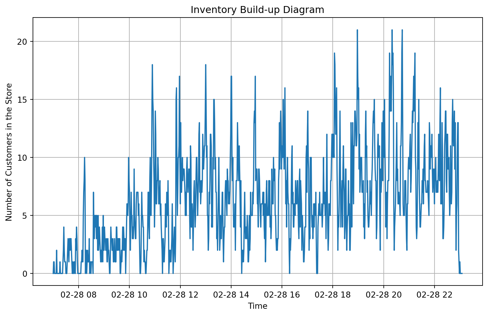
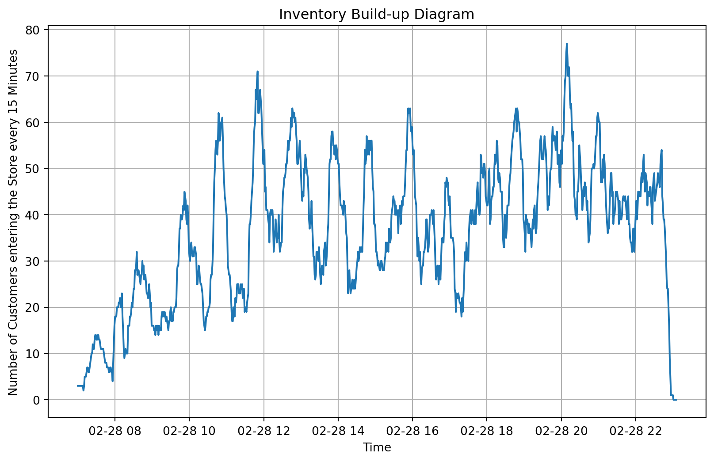

Throughput is a commonly used metric in supply chain analytics. It is the rate at which products, material, people, or information move through the supply chain from point of origin to the point of consumption.
If we were speaking of a product or material, you could measure throughput from the supplier (origin) to the customer (end point). In manufacturing, it could be from when the process starts of building or assembling the material, until that process is complete.
Throughput is essential to a number of practical uses, some of them being customer experience, staffing levels, store layout, or queue management.
The formula for throughput is fairly simple:
\[ L = \lambda * W \]
Where:
L is the average number of customers, products, etc in the location, store or facility
\[ \lambda \] is the effective arrival rate
W is the average time spent in the process
Today, we’ll be calculating the parameters within Little’s Law and comapring them to our data, while also creating an inventory build up diagram for a small grocery store named Roger’s Market. Roger’s Market uses Amazon Walk Out technology to track a customers time in a store. We’ll be using the data from the store and the Walk Out technology to determine our average trip duration per customer.
Basic Analysis
As always, we want to load and describe our data. Below describes some of the less straightforward features within our data set.
Purchase_datetime: It is a purchase time. Consider it as an exit time from the store
Transaction_id: It is a group(person) & item identifier.
Session_id: It is a group/person identifier, i.e., the first three transactions are three items that ONE person bought. Notice that those three transactions have the same purchase_datetime.
Trip_duration_mins: It is how long a customer/a group of customers spend within the store. So, purchase_datetime - trip_duration_mins = an entry time to the store.
Group_size: how many customers came into the store as a group. One customer in that group will pay all together.
Now lets load the data.
/tmp/ipykernel_91843/1611834843.py:7: DtypeWarning:
Columns (0,1,2,8,9,11,12,13,14) have mixed types. Specify dtype option on import or set low_memory=False.
From viewing the data and info for the data, we see that some of the columns are in datetime format. Python handles datetime differently, which means we’ll need to do some conversion to get it to minutes.
We also find that columns of currency, price, total_price, and transaction datetime have all null values. Transaction datetime would be useful, but we do have entry_datetime, purchase_datetime, and trip duration, so we can still use that data for our purpose.
Let’s drop those columns which have all NaN values and see if there are any duplicates in this data as well.
# Dropping columns which have all NaN valuesrogers = rogers.drop(['currency', 'price', 'total_price', 'transaction_datetime'], axis=1)# Counting how many duplicated rows of data are presentrogers.duplicated().sum()
120898
There are 120,098 duplicates out of the 125,544 data points! From running rogers.info(), we know we should have 4,645 rows of data (non-null values).
# Dropping duplicated rowsrogers = rogers.drop_duplicates(subset=['purchase_datetime', 'transaction_id', 'session_id', 'trip_duration_mins', 'group_size'])# New shape of dataframe after dropping duplicated rowsrogers.shape
(4646, 13)
So now there are 4,646 rows after dropping duplicates. That is one row off from what we anticipated. The next thing to do is check for N/A values.
We’ll create a function which checks each column for NA values, then records the row indices that have NA values for each column.
We can see that all the NA values are in row index 4645 (which is equivalent to the 4656 row since python starts index counting at 0).
We’ll drop row index 4645.
rogers = rogers.drop(index =4645)rogers.shape
(4645, 13)
But before we proceed with our data analysis, let’s take another look at the session_id variable. As described the session_id is for one session from one customer. If there are multiple of the same session_id’s, that means it was from the same customer, and should have the exact same session_id, purchase_datetime, trip_duration, and group_size.
Let’s count how many unique session_id’s we have.
rogers.session_id.nunique()
2183
There are only 2,183 unique session ID’s, but we have 4,645 rows of data still. Let’s drop the duplicated session ID’s so there is only one row remaining for each session ID.
We still have one extra row of data. Where could it be?
Let’s use dropna from the columns to see if anything is being dropped.
rogers.dropna()rogers.shape
(2183, 13)
Converting Datetime
To find throughput, we want to know how many customers are present in the store at every minute and the rate of their arrival. Knowing how many customers are in the store every minute will allow us to make an inventory build-up diagram.
But first, we need to know what each individual’s entry time is before we can know how many are in the store every minute.
To calculate entry time, we’ll need to subtract the trip duration in minutes from the purchase_datetime.
Knowing python formatting and working through this in the past, I know the current format of purchase_datetime (M/DD/YYYY HH:MM) will cause issues when subtracting another datetime if they’re not in the same format. The default format in python for datetime is (YYYY-MM-DD HH:MM:SS), so we’ll need to convert that.
I also know that we’ll need to convert trip duration in minutes from its current decimal form to datetime format.
Calculating Inventory and creating Inventory Build-Up Diagram
Now to create an inventory build-up diagram of the amount of customers in the store by minute, we’ll need to create a dataframe which lists every single possible minute in our time range from our data.
For our largest valued time, we’ll want to find the maximum in the purchase_datetime column, since that time will always come after the largest entry time.
For our smallest valued time, we’ll want to look at entry time, since that will always be smaller than the smallest purchase time.
The time range of the data is 07:01 to 23:01. We’ll do a minute before and after for our range to ensure we don’t miss anything that may be rounding up or down due to the number of seconds.
For the above code, first we are iterrating over all the rows in the rogers dataframe, meaning we are getting the index for the row, and all the data in the row itself. We want to do this in order to go row by row, seeing if that person is either in the store, or not in the store based on their entry and purchase time.
We then round down the entry time to the nearest minute using the floor function.
This is where it can get tricky. The mask variable will return a boolean value (True or False) for every row in dt_customer_count dataframe where the time in the dt_customer_count dataframe is equal to or greater than the entry time of the customer, and where the the dt_customer_count time is less than the purchase time for that customer. Overall, this is returning a True or False for if the customer is in the store at that time.
Finally, we use the .loc function to locate rows where this is True, and add the group size to the customer count, since some customers come in groups.
Below is what the dataframe looks like:
dt_customer_count.head()
time
customer_count
0
2024-02-28 07:00:00
0
1
2024-02-28 07:01:00
1
2
2024-02-28 07:02:00
1
3
2024-02-28 07:03:00
0
4
2024-02-28 07:04:00
0
What is the average number of customers in the app every minute?
plt.figure(figsize=(10, 6))plt.plot(dt_customer_count['time'], dt_customer_count['customer_count'])plt.title("Inventory Build-up Diagram")plt.xlabel("Time")plt.ylabel("Number of Customers in the Store")plt.grid(True)plt.show()

Going from 7:00 AM to 10:00 PM, it looks like there is slowly more and more people entering the store. There was also a large influx of people just around 4:00 PM (maybe that’s when people are out of work?).
Customers entering every 15 Min
Now, let’s look at how many customers are entering the app every 15 minutes to show different ways to look at the data.
We’ll use the same exact method as we did before to get the original customer count for every minute, but instead of comparing the “mask” variable to a time sequence that’s every minute, the distance or time between each interval will be 15 minutes.
This is shown below by the column “end_time”, which shows the original time sequence variable and then pd.Timedelta(minutes=15) added to it.
We then create a similar table as we did before to count our customers.
Notice this time, we put a start and end time in our time sequence (dt_times_15min) rather than just “time” which was every minute in the dt_customer_count. This changes our approach.
We want to know how many enter in the 15 minute time frame. The entry time will need to be greater than or equal to the start time and less than the end time for them to have entered the store in that interval.
For example, if a customer enters the app at 7:05 AM, they will add to the customer count for start times between 7:00 and 7:04.
Now lets plot the inventory diagram again.
plt.figure(figsize=(10, 6))plt.plot(dt_customer_count_15min['start_time'], dt_customer_count_15min['customer_count'])plt.title("Inventory Build-up Diagram")plt.xlabel("Time")plt.ylabel("Number of Customers entering the Store every 15 Minutes")plt.grid(True)plt.show()

We can see the number of customers entering the store initially is slowly rising, then it looks like a fairly steady average between Noon and 6 PM, then it take a spike at 6 PM and lowers back down with a sharp turn down at 11 PM.
We’ll calculate the average amount of customers entering the store every 15 minutes.
dt_customer_count_15min['customer_count'].mean()
36.821946169772254
Comparing Little’s Law Calculations to Data
Now let’s get back to Little’s Law. We want to see if we can get the same results through Little’s Law as we do through directly calculating the parameter from the data set. Remember, Little’s law has 3 main parameters: Arrival rate, inventory or average number of customers in the process, and time spent in the process.
We’ll be comparing our time spent in process or duration from our data to the result from Little’s Law. Theoretically, we should get the same answers. However, errors can always occur in the process.
We already have average inventory, or customers in the process, so now we need arrival rate to calculate time in process.
There are multiple ways to go about this, but we’ll use the groupby method.
# converting entry time to only list the hour they entered (hourly arrival rate)rogers['entry_hour'] = rogers['entry_datetime'].dt.hour# Grouping customers by entry hour summing the group size.hourly_customer_count = rogers.groupby('entry_hour')['group_size'].sum().reset_index(name='total_customers')# Removing customers arriving after 11 PM (CLOSING TIME)hourly_customer_count = hourly_customer_count[hourly_customer_count['entry_hour'] !=23]hourly_customer_count
entry_hour
total_customers
0
7
31.0
1
8
79.0
2
9
91.0
3
10
132.0
4
11
140.0
5
12
189.0
6
13
163.0
7
14
161.0
8
15
154.0
9
16
149.0
10
17
143.0
11
18
195.0
12
19
184.0
13
20
205.0
14
21
183.0
15
22
173.0
We need to calculate the average customers entering the app, so we’ll find the mean of the total_customers column
Our average customer arrival rate per hour is 148.25.
Now we can use Little’s Law to calculate average trip duration.
To repeat, Little’s Law is \[ L = \lambda * W \], but we’re solving for W. Tranforming the formula, we get \[ W = L / \lambda \], or average inventory divided by arrival rate.
# Calculating average trip duration. Converting customers per hour to minutes.trip_duration = avg_inventory/(avg_customers_per_hour/60)trip_duration_min = pd.to_timedelta(trip_duration, unit='m')trip_duration, trip_duration_min
(2.565751573743362, Timedelta('0 days 00:02:33.945094421'))
From Little’s Law, we calculated that the average trip duration was 2.566 minutes, or 2 minutes and 34 seconds.
Lets see how that compares to the trip duration average from the data.
# Creating separate dataframe without any rows which have the customer arriving after 11 PMrogers_before_11 = rogers[rogers['entry_hour'] !=23]# Calculating average duration_min = np.average(rogers_before_11['trip_duration_mins'], weights=rogers_before_11['group_size'])duration_min_converted = pd.to_timedelta(duration_min, unit='m')duration_min, duration_min_converted
(2.1050608347386173, Timedelta('0 days 00:02:06.303650082'))
Our calculated duration within the app was 2.1 minutes, 0.4 minutes or 27 seconds off from our duration calculated from Little’s Law.
This is likely due to our rounding down to the nearest minute minute for entry time using the floor function.
Overall, the results we calculated here could be used by the store to gauge effectiveness of site navigation improvements, targeting algorithms, payment process, and many other parts of the process when someone comes into the store. Little’s Law and it’s parameters are key metrics within the supply chain analytical field, helping stores and customers reach their optimal process flow.